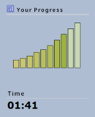

How it works
You need to reach the accuracy goal while maintaining good typing speed. If you perform well, you can move on sooner. If your speed is low, the program lets you complete the full exercise for better practice.
Adjusting duration
You can turn off Optimal Duration anytime from the lesson view by selecting Adjust course duration and choosing Turn off Optimal Duration.
Optimal Duration helps you train efficiently by adapting practice to your skill level and saving time.